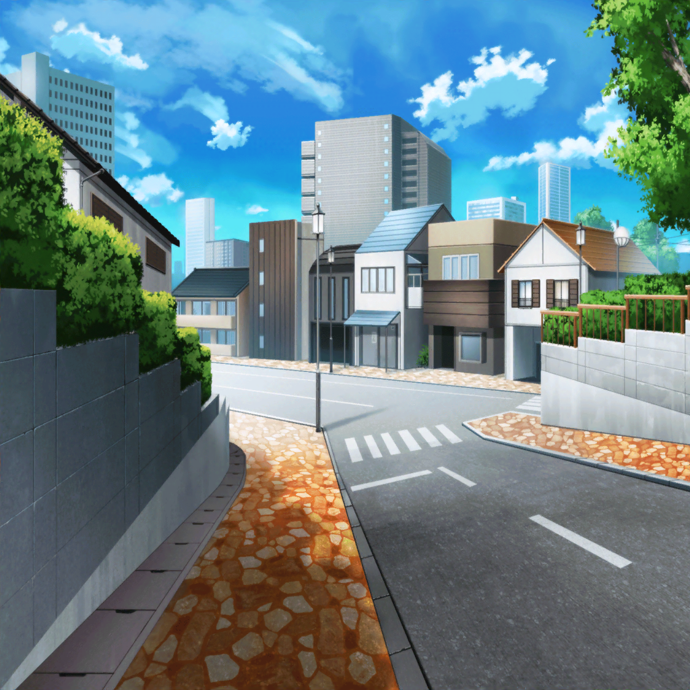

道
犬
ワンワン！
千聖
お水がほしいの？ ちょっと待ってね、用意するから
千聖
……あら？ {{userName}}さんじゃないですか。
こんなところでどうされたんですか？
千聖
私ですか？
犬の散歩をしているんです。
毎日妹と交代でやっているのですが、今日は私が当番なんですよ
千聖
時間があったら一緒に散歩しませんか？
天気もいいですし
千聖
……一緒に行ってくれますか？ では行きましょうか
千聖
この道はいつもの散歩コースなんですよ。
車通りが少ないから、犬を歩かせるのにぴったりなんです
千聖
そうだわ、この間あったことの話を聞いていただけませんか？
少し長くなってしまうかもしれませんが……
千聖
先日、お仕事で舞台の公演があったんです。
貧しい姉妹の姉が女優を目指すお話で、
私は病弱な妹という役でした
千聖
有名な演出家の先生に指名していただいたので、
しっかり役作りして稽古に臨んだのですが……
千聖
何度練習しても先生の望む演技ができなくて、
本当に困ってしまったんです
千聖
意外、ですか？
そうですよね……私もこんな経験は初めてでした
千聖
どこをどう直せばいいのか、何が間違っているのか、
自分で考えても答えがでなかったんですよ
千聖
パスパレのみんなが見学に来てくれたのが、
ちょうどそんな時でした
千聖
パスパレのみんなは私ならできると
思ってくれていたみたいで、
何度も『がんばれ』と声をかけてくれたのですが……
千聖
その応援が、逆にプレッシャーに感じてしまって……
千聖
日菜ちゃんから『千聖ちゃんならなんでもできるって思ってたよ』
と言われたのですが、決してそんなことはないんです
千聖
……なんでもできそうに思ってた、ですか？
千聖
私は日菜ちゃんみたいな天才タイプではないんですよ。
これまで努力を重ねてきたから、今の私があるんです
千聖
ただ、私はこれまで努力する姿を表に見せていませんでした。
努力することは当然のことですから、
見せる必要もないと思っていたんです
千聖
だから、みんな私がなんでもできてしまうと思うのは
仕方ないかもしれませんね
千聖
そこで私は初めて、パスパレのみんなに
本心をあまり話してこなかったんだな、と気付いたんです
千聖
だから、みんなをお茶に誘ったんです。
自分のことをわかってもらおうと思いまして
千聖
５人で行ったカフェは本当に楽しかったです。
プライベートな話をたくさんして……
時間が経つのがあっという間でした
千聖
パスパレのみんなと、
あんなにずっと話し続けていたのは初めてだと思います
千聖
本当は、少し怖くもあったんですよ。
素の私を見せたらどう思われるかしら……って
千聖
でも、みんなあたたかく受け入れてくれました
千聖
とても嬉しかったです。
心から話せる仲間がいるのは、いいものですね
千聖
私、もっとみんなを知りたくなりました。
今度はひとりひとりとゆっくり話してみたいと思っています
千聖
私のことをもっと知ってほしいですし、
聞いてみたいこともたくさんありますね
千聖
……私、変わりましたか？
そうですよね、自分でも驚いています
千聖
みんなとの関係がこれからどう変わっていくのか、
楽しみです
千聖
今まであまり本心を話してきませんでしたから、
いきなりなんでも話せる、という訳ではないのですが……
千聖
みんなに少しずつ私のことをわかってもらえたらいいですね
千聖
そうやって、ゆっくりみんなとの距離を
縮めていけたらと思っています
千聖
みんなと完全に打ち解けるのも、
そう遠くないと思っているんですよ
千聖
そうなったら私はみんなに何を話すんでしょうね。
ふふっ、未来の私に聞いてみたいですね
千聖
最近、パスパレが本当に
自分の場所だと思えるようになってきたんですよ
千聖
もっとみんなとの絆を深めて、自信を持って
私の場所はパスパレだと言えるようになりたいですね
千聖
これからパスパレのお仕事も、ソロの活動も、
どちらも一層充実させていきたいと思っています
千聖
{{userName}}さんに活躍している姿が
見せられるように頑張ります。
応援していてくださいね
犬
ワオーン！
千聖
ああ、ごめんなさい、そろそろご飯の時間だったわね
千聖
それでは私は家に戻りますね。
よかったら、またお話を聞いてください